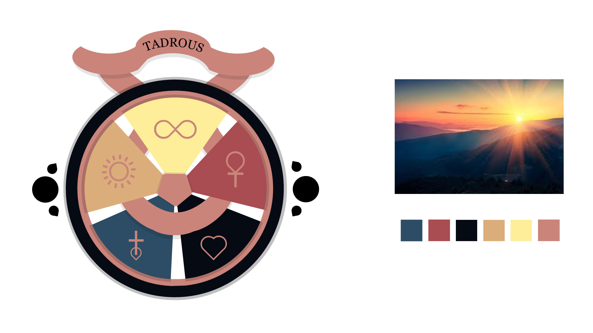

Digital Media
N102 Digital Media Imagery Coursework, 2021
A series of projects created in Adobe Photoshop and Illustrator for the Digital Media Imagery course offered at the School of Informatics and Computing. The objective of the design poster project was to create a poster that illustrated each of the 9 principles of design in a clear and eye-catching way. The objective of the unique advertisement project was to sell a product or idea in a clever way by mergeing type and imagery. The objective of the family crest project was to design a crest using symbols related to your culture and identity, and a color scheme based on a photo from nature. The objective of the digital eye painting was to draw a realistic image of your eyes using various painting tools within Photoshop.

Principles Of Design Poster

Unique Advertisement Project
Family Crest Design

Digital Eye Painting